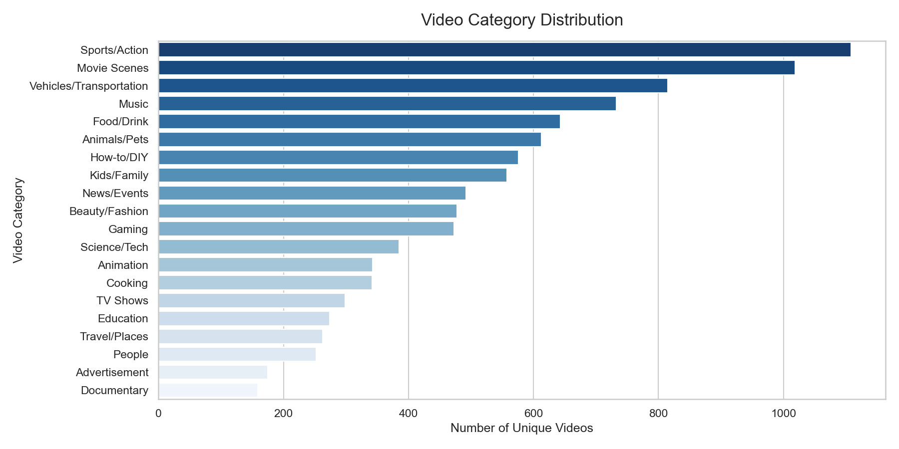
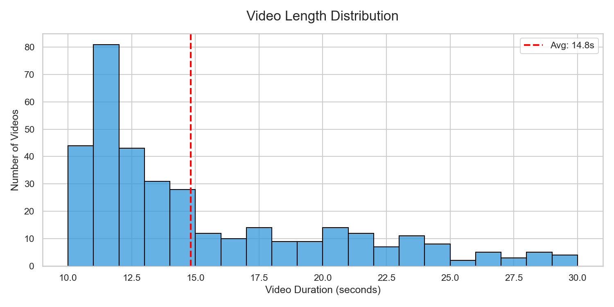
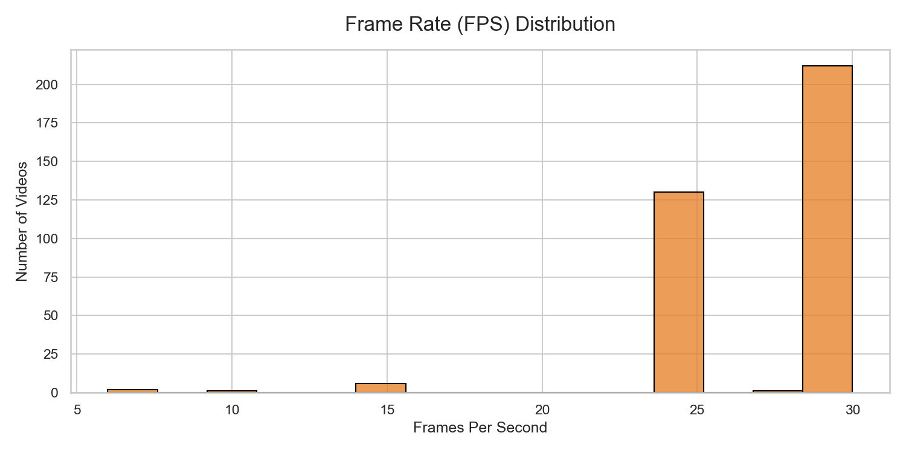
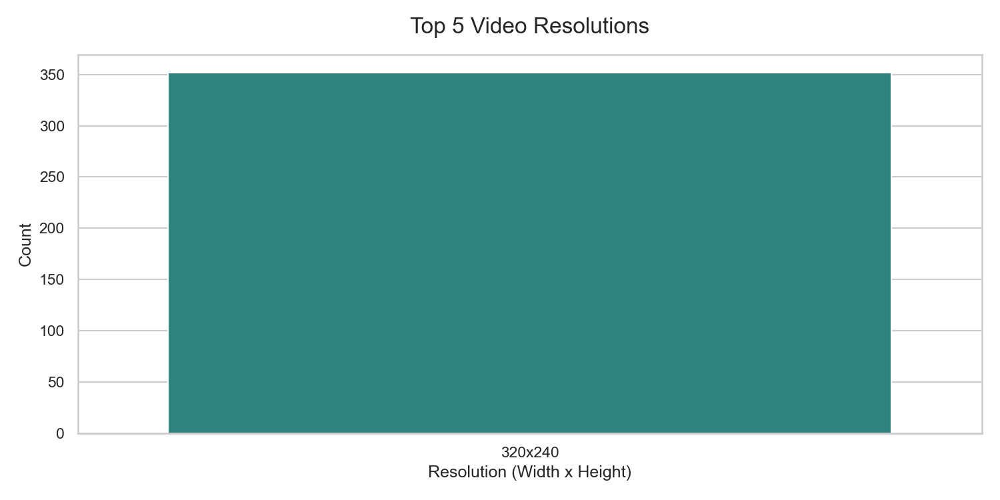
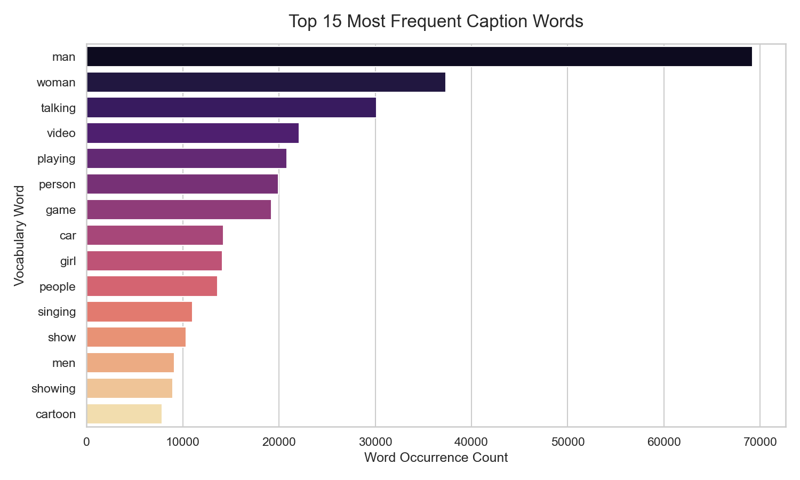
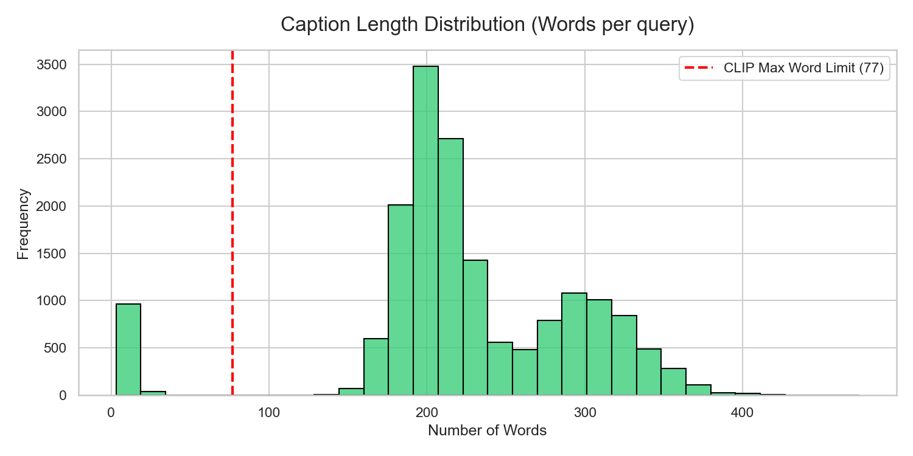

Total Videos
--
Total Captions
--
Average Duration
--
Average FPS
--
Video Category Distribution
Insight: The MSR-VTT dataset covers 20 distinct categories. As shown, categories like "Sports/Action" and "Movie Scenes" dominate the dataset, while "Documentary" or "Advertisement" are scarce.
Zero-Shot Implication: Due to the imbalance, the VLM's ability to generalize to underrepresented categories (e.g., Cooking, Science) will be a strong indicator of true zero-shot performance without biased fine-tuning.

Temporal Constraints: Duration & FPS
Insight: Videos heavily cluster around the 15-second mark, with strict boundaries between 10 to 30 seconds. The average framerate approaches 30 FPS.
Zero-Shot Implication: Extracting every single frame over 15 seconds would produce ~450 dense tensor embeddings per video, overwhelming basic search architectures. We must implement a downsampling strategy (e.g., 1 frame per second) taking only ~15 features per clip to remain computationally viable.


Spatial Constraints: Resolution
Insight: The dataset is highly fragmented spatially. The dominant resolution is 320x240 (a 4:3 SD aspect ratio), but many other widescreen (16:9) permutations exist.
Zero-Shot Implication: Pretrained Vision Transformers (ViT) within CLIP are structurally hardcoded to accept square pixel blocks, typically 224x224. All frames must be center-cropped or padded strictly to this dimension before feature extraction.

Linguistic Constraints: Token Length & Vocabulary
Insight: Captions describing the events average around 10 words. Crucially, the vocabulary is heavily dominated by generic nouns ("man", "woman", "person").
Zero-Shot Implication: Standard CLIP text encoders enforce a strict 77-token maximum sequence length. Captions exceeding this require truncation. Furthermore, the generic nature of query words means our search system will face challenges differentiating highly complex or dense semantic scenes.

